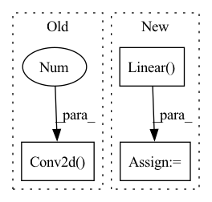

Pattern ID :15050
Before Change
nn.AdaptiveAvgPool2d(1),
nn.Conv2d(512, 1024, kernel_size=1),
nn.LeakyReLU(0.2),
nn.Conv2d(1024 , 1, kernel_size=1)
)
def forward(self, input: Tensor) -> Tensor:
out = self.main(input)After Change
self.avgpool = nn.AdaptiveAvgPool2d(14)
self.classifier = nn.Sequential(
nn.Linear(512 * 14 * 14, 1024),
nn.LeakyReLU(0.2),
nn.Linear( 1024, 1)
)
def forward(self, input: Tensor) -> Tensor:
out = self.features(input)In pattern: SUPERPATTERN
Frequency: 5
Non-data size: 3
Instances Fragment ID: 50491840
Project Name: lornatang/srgan-pytorch
Commit Name: 9e0f283960ecefe65d9f18e11108f7e5b780f6da
Time: 2020-10-20
Author: liuchangyu1111@gmail.com
File Name: srgan_pytorch/model.py
M Class Name: Discriminator
N Class Name: Discriminator
M Method Name: __init__(1)
N Method Name: __init__(1)
M Parent Class: nn.Module
N Parent Class: nn.Module
M File Name: srgan_pytorch/model.py
N File Name: srgan_pytorch/model.py
M Start Line: 62
M End Line: 65
N Start Line: 63
N End Line: 69
Before Change
self.reshape = Rearrange("b h w d -> b w h d")
self.attend = nn.Sequential(
Rearrange("b h w d -> b d h w"),
nn.Conv2d( dim, hidden_dim, 1 ) ,
Rearrange("b d h w -> b (d h) w"),
nn.Conv1d(hidden_dim * h, h * h, 1, groups=segment),
Rearrange("b (h1 h2) w -> b w h1 h2", h1 = h),After Change
nn.Softmax(dim = -1),
)
self.recover = Rearrange("b w s h d -> b h w (s d)", s = segment)
self.proc = nn.Linear( dim, dim)
def forward(self, x):
// b h w d = X.shape
input = x Fragment ID: 50491841
Project Name: liuruiyang98/jittor-mlp
Commit Name: 387d77eca07e13e6fb4fc53ccb0304bad40e2942
Time: 2022-02-27
Author: 865296294@qq.com
File Name: models_pytorch/dyna_mlp.py
M Class Name: DynaMixerOp_h
N Class Name: DynaMixerOp_h
M Method Name: __init__(5)
N Method Name: __init__(5)
M Parent Class: nn.Module
N Parent Class: nn.Module
M File Name: models_pytorch/dyna_mlp.py
N File Name: models_pytorch/dyna_mlp.py
M Start Line: 58
M End Line: 60
N Start Line: 68
N End Line: 79
Before Change
Fire(512, 64, 256, 256),
)
// Final convolution is initialized differently form the rest
final_conv = nn.Conv2d(512 , self.num_classes, kernel_size=1)
self.classifier = nn.Sequential(
nn.Dropout(p=0.5),
final_conv,
nn.ReLU(inplace=True),After Change
self.global_avgpool = nn.AdaptiveAvgPool2d(1)
self.fc = self._construct_fc_layer(fc_dims, 512, dropout_p)
self.classifier = nn.Linear( self.feature_dim, num_classes)
self._init_params()
def _construct_fc_layer(self, fc_dims, input_dim, dropout_p=None): Fragment ID: 50491863
Project Name: vlsomers/bpbreid
Commit Name: 3ddf9ce6998e6a5d2052aba4286b8b899e03149e
Time: 2018-10-27
Author: k.zhou@qmul.ac.uk
File Name: torchreid/models/squeezenet.py
M Class Name: SqueezeNet
N Class Name: SqueezeNet
M Method Name: __init__(6)
N Method Name: __init__(4)
M Parent Class: nn.Module
N Parent Class: nn.Module
M File Name: torchreid/models/squeezenet.py
N File Name: torchreid/models/squeezenet.py
M Start Line: 62
M End Line: 113
N Start Line: 56
N End Line: 102
Before Change
super().__init__()
self.attend = nn.Sequential(
Rearrange("b h w d -> b d w h"),
nn.Conv2d( dim, hidden_dim, 1 ) ,
Rearrange("b d w h -> b (d w) h"),
nn.Conv1d(hidden_dim * w, w * w, 1, groups=segment),
Rearrange("b (w1 w2) h -> b h w1 w2", w1 = w),After Change
nn.Softmax(dim = -1),
)
self.recover = Rearrange("b h s w d -> b h w (s d)", s = segment)
self.proc = nn.Linear( dim, dim)
def forward(self, x):
// b h w d = X.shape
input = x Fragment ID: 50491834
Project Name: liuruiyang98/jittor-mlp
Commit Name: 387d77eca07e13e6fb4fc53ccb0304bad40e2942
Time: 2022-02-27
Author: 865296294@qq.com
File Name: models_pytorch/dyna_mlp.py
M Class Name: DynaMixerOp_w
N Class Name: DynaMixerOp_w
M Method Name: __init__(5)
N Method Name: __init__(5)
M Parent Class: nn.Module
N Parent Class: nn.Module
M File Name: models_pytorch/dyna_mlp.py
N File Name: models_pytorch/dyna_mlp.py
M Start Line: 39
M End Line: 41
N Start Line: 37
N End Line: 48
Before Change
// Initial convolution block
down_layers = [nn.ReflectionPad2d(3),
nn.Conv2d( in_channels, 64 , kernel_size=7, stride=1, padding=0, bias=False) ,
nn.InstanceNorm2d(64),
nn.ReLU(inplace=True)]
After Change
// Gamma, Beta block
if self.light:
fc = [nn.Linear( 256, 256, bias=False) ,
nn.ReLU(inplace=True),
nn.Linear(256, 256, bias=False),
nn.ReLU(inplace=True)] Fragment ID: 50491855
Project Name: lornatang/ugatit-pytorch
Commit Name: 29402d1cfc1f9bbb66eed660fd84b48adcbdc188
Time: 2020-05-19
Author: liuchangyu1111@gmail.com
File Name: ugatit_pytorch/model.py
M Class Name: Generator
N Class Name: Generator
M Method Name: __init__(3)
N Method Name: __init__(3)
M Parent Class: nn.Module
N Parent Class: nn.Module
M File Name: ugatit_pytorch/model.py
N File Name: ugatit_pytorch/model.py
M Start Line: 25
M End Line: 54
N Start Line: 100
N End Line: 142